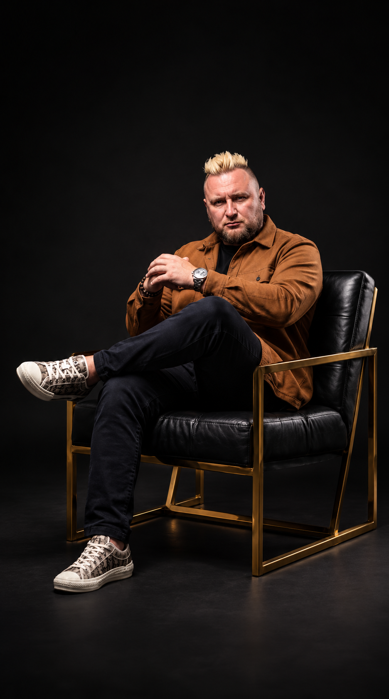

Знакомимся с запросом
Уточняем, что именно вы хотите исследовать и какого результата ждёте от встречи.
Представьте: вы не рассматриваете аркан со стороны. Вы оказываетесь внутри его пространства — замечаете детали, прислушиваетесь к себе и исследуете свой вопрос через образы.
Это не гадание и не предсказание будущего. Карты здесь — символический маршрут для воображения и личных ассоциаций.
Не пытайся выбрать правильно. Просто задержи взгляд на той, которая почему-то притягивает внимание. Это не тест и не гадание — лишь маленькое знакомство с языком образов.
Выбор двери ничего не диагностирует и не определяет вашу личность. Здесь нет правильного или неправильного варианта — только повод прислушаться к собственному интересу.
Иногда мы уже много раз всё обдумали. Но вместо ясности снова оказываемся в той же точке. В этой практике можно на время отложить привычный внутренний комментарий и посмотреть на свой запрос через метафоры, ощущения и воображение.
«Я понимаю головой, но не могу решиться».
«Хожу по кругу и не вижу следующего шага».
«Хочу взглянуть на ситуацию под другим углом».
Не станем искать в картах готовый диагноз или универсальный ответ. Используем их как последовательность образов, чтобы исследовать ваш вопрос и заметить собственные реакции, ресурсы и возможные варианты действий.
Это не жёсткий сценарий и не экзамен на умение визуализировать. Последовательность образов и темп подбираются под ваш запрос и ваше состояние.
Уточняем, что именно вы хотите исследовать и какого результата ждёте от встречи.
Настраиваем комфортный темп, выбираем удобное положение и договариваемся о сигнале остановки.
Я сопровождаю вас через символические сцены. Вы замечаете то, что возникает именно у вас.
Обсуждаем опыт и формулируем один реалистичный шаг, который вы сами выбираете.
Сцена или метафора, которая поможет по-новому посмотреть на ваш вопрос.
Ваши собственные ощущения, ассоциации и мысли — без навязанной трактовки карты.
Небольшое действие, которое вы сочтёте уместным после встречи. Без обещаний мгновенных перемен.

Провокативный психолог, семейный и гипнотерапевт. В работе использую юмор, метафоры и образные практики. В этой встрече моя задача — не объяснять вам, что «на самом деле» означает карта, а бережно сопровождать исследование ваших собственных ассоциаций.
Перед публикацией проверьте точные названия программ, квалификаций и мероприятий. Указывайте только те статусы и достижения, которые можете подтвердить.
Условия и стоимость подтвердим до записи. Не нужно заранее покупать колоду или готовиться к визуализации.
Нет. Карты не используются для предсказания будущего. Они задают символическую структуру путешествия, а смысл возникающих образов вы определяете сами.
Это нормально. Образный опыт у людей различается: кто-то видит сцены, кто-то замечает отдельные детали, мысли, звуки или ощущения. Я не буду требовать от вас «правильной» визуализации.
Нет. Вы сохраняете возможность слышать, говорить, задавать вопросы и остановить практику. Перед началом мы отдельно обсудим согласие, комфорт и сигнал остановки.
Нет. Нельзя заранее гарантировать конкретное переживание или результат. Цель встречи — дать вам структурированное пространство для исследования вопроса и поиска собственного следующего шага.
На этой странице описана отдельная образная практика. Она не заменяет полноценную психотерапию, медицинскую диагностику или лечение. Если вам нужна именно терапевтическая работа, формат и задачи стоит обсудить отдельно.
Да. Вы можете открыть глаза, сменить положение, сделать паузу или завершить встречу. Ваше согласие и комфорт важнее сценария.
Напишите мне в Telegram. Коротко обсудим ваш запрос, формат, ограничения и свободное время. После этого вы сможете спокойно решить, подходит ли вам такая встреча.
Написать Прохору в TelegramБез обязательства записываться. До согласования деталей оплата не требуется.